Kiracı, ev sahibi, yönetim ve kurumsal paneller dahil 76 sayfa aşağıda gruplandı. Bir karta tıklayarak sayfayı açabilirsiniz. Sayfalar telefon genişliğinde de çalışır; tarayıcı pencerenizi daraltarak ya da telefondan açarak mobil görünümü inceleyebilirsiniz.
Kamuya açık pazarlama ve bilgi sayfaları
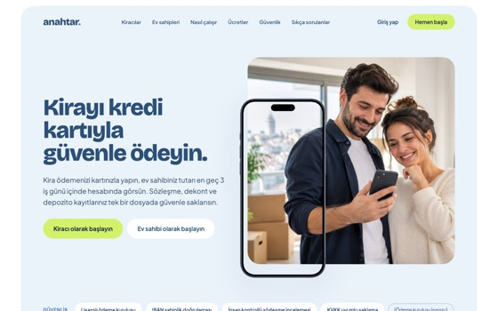
01 AnasayfaHero, rol kartları, dört adım, ürün önizlemeleri, güven, ücret ve SSS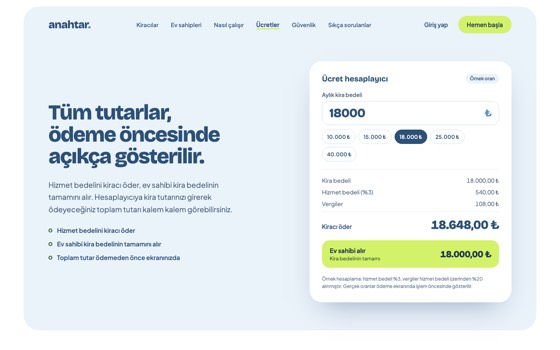
02 ÜcretlerÇalışan ücret hesaplayıcı, kim ne öder, hizmet kapsamı, SSS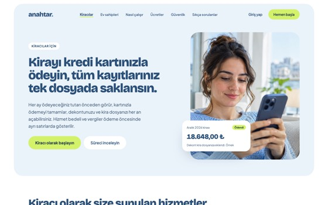
03 Kiracılar içinKiracı faydaları, ödeme akışı ve kira dosyası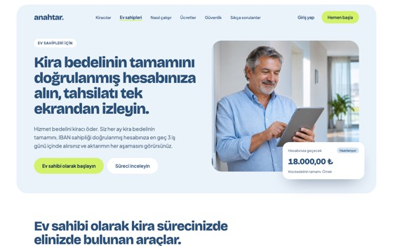
04 Ev sahipleri içinTahsilat takibi, doğrulanmış hesap, aktarım süreci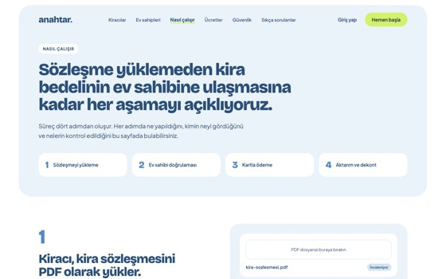
05 Nasıl çalışırDört adımlı süreç, doğrulamanın sınırı, zaman çizelgesi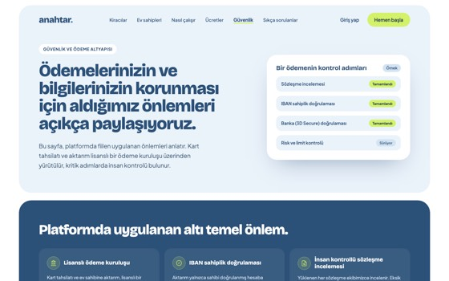
06 Güvenlik ve ödeme altyapısıAlınan önlemler, risk kontrolleri, erişim kayıtları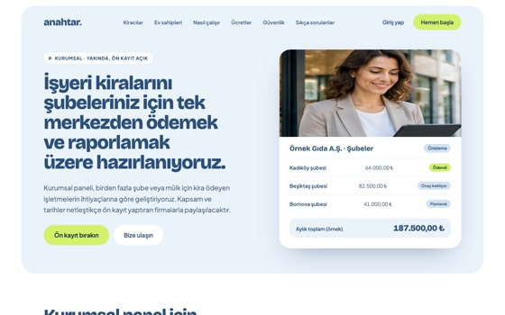
07 Kurumsal (ön kayıt)Çoklu şube, toplu ödeme ve onay akışı için ön kayıt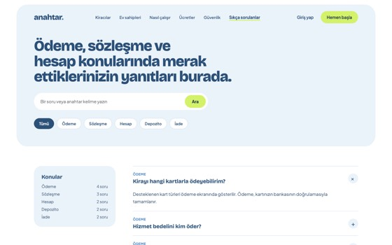
08 Sıkça sorulan sorularKategorili, açılır kapanır 13 soru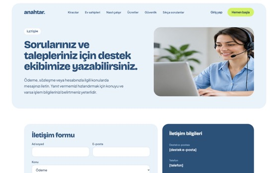
09 İletişimİletişim formu ve destek bilgileri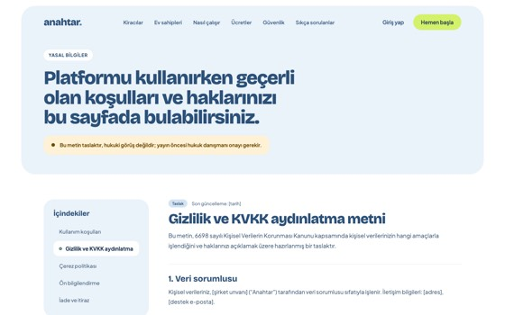
10 Yasal bilgilerİçindekiler ve KVKK aydınlatma taslağıGiriş, kayıt ve doğrulama akışı
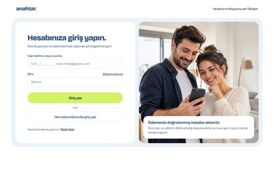
11 GirişTelefon veya e-posta ile giriş, tek kullanımlık kod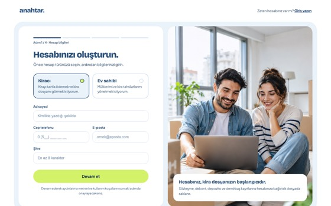
12 Kayıt (adım 1)Hesap türü seçimi ve hesap bilgileri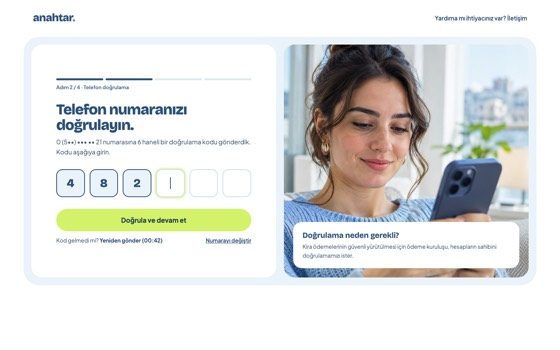
13 Telefon doğrulama (adım 2)6 haneli kod doğrulaması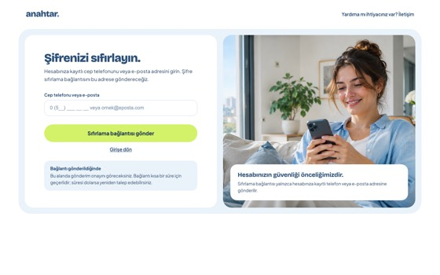
14 Şifre sıfırlamaTelefon veya e-postaya sıfırlama bağlantısı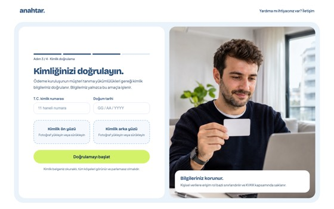
15 Kimlik doğrulama (adım 3)T.C. kimlik bilgisi ve kimlik fotoğrafı yükleme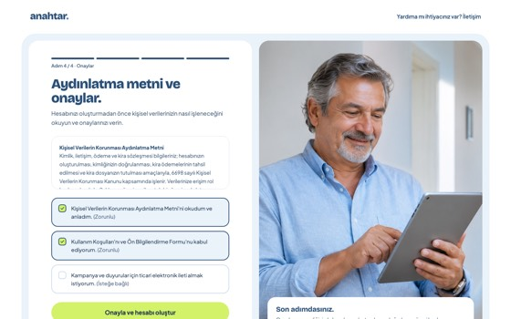
16 Onaylar ve KVKK (adım 4)KVKK aydınlatma ve zorunlu/isteğe bağlı onaylar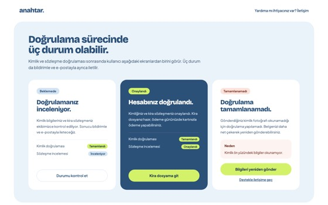
17 Doğrulama sonucuBeklemede, onaylandı, tamamlanamadı durumları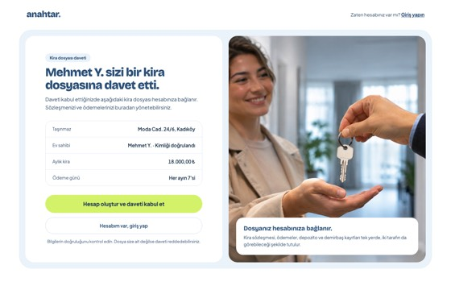
18 Davet karşılamaEv sahibinin gönderdiği kira dosyası davetiElif Kaya olarak kiracı deneyimi
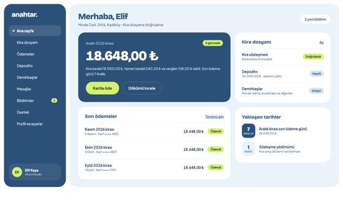
19 Ana sayfaAralık kirası, son ödemeler, dosya özeti, yaklaşan tarihler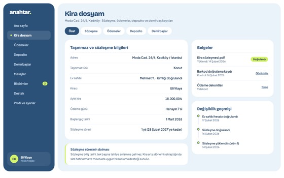
20 Kira dosyamTaşınmaz ve sözleşme bilgileri, belgeler, değişiklik geçmişi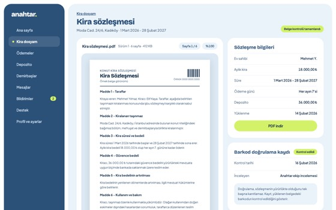
21 Sözleşme detayıBelge görüntüleyici, barkod doğrulama kaydı, sürüm geçmişi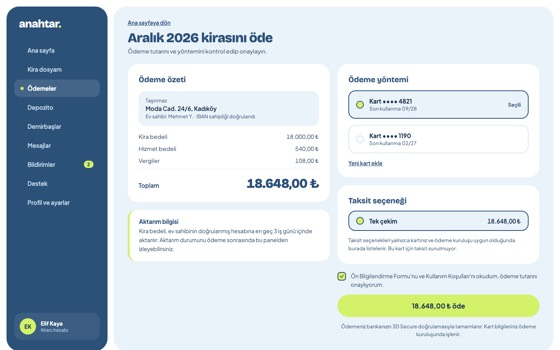
22 ÖdemeÖdeme özeti, kart seçimi, taksit bilgisi, onay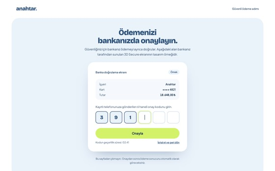
23 3D Secure doğrulamaBanka 3D Secure doğrulama ekranı örneği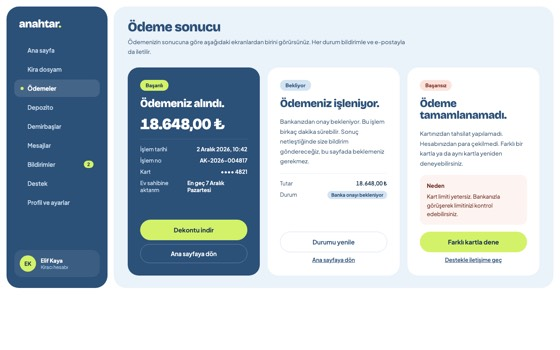
24 Ödeme sonucuBaşarılı, bekliyor ve başarısız ödeme durumları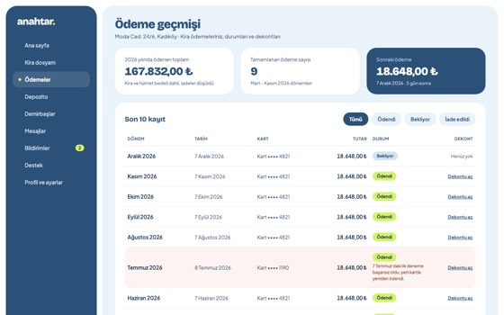
25 Ödeme geçmişiÖdeme tablosu, filtreler, iade ve yeniden ödeme örnekleri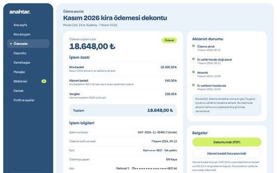
26 Dekont detayıDekont kalemleri, aktarım zaman çizelgesi, indirme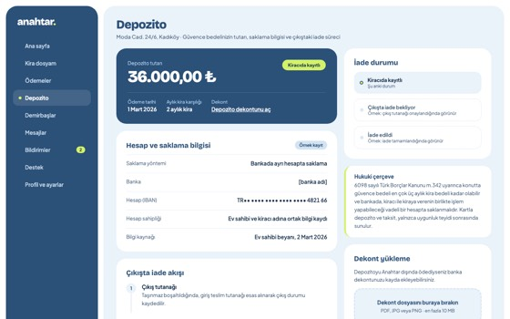
27 DepozitoDepozito kaydı, saklama bilgisi, çıkışta iade akışı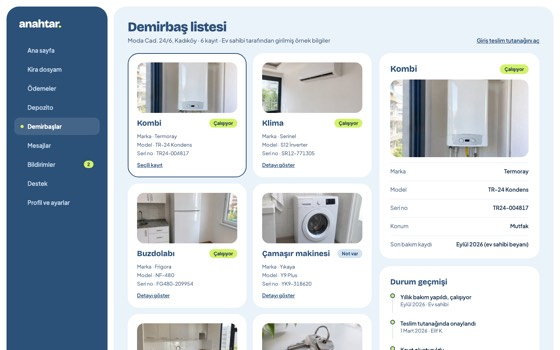
28 DemirbaşlarFotoğraflı demirbaş kartları, detay paneli, not ve itiraz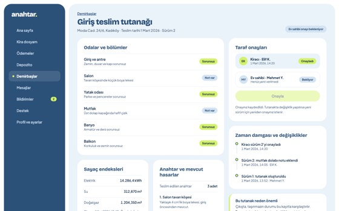
29 Teslim tutanağıBölümler, sayaç endeksleri, fotoğraflar, taraf onayı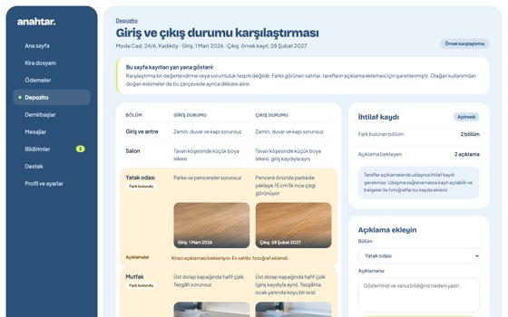
30 Hasar karşılaştırmaGiriş ve çıkış fotoğraflı karşılaştırma, ihtilaf kaydı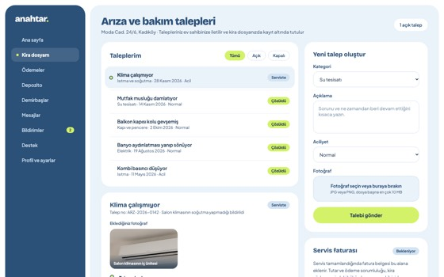
31 Arıza talepleriTalep listesi, yeni talep formu, durum çizelgesi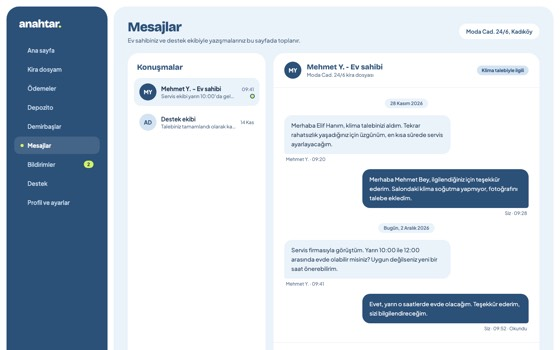
32 MesajlarEv sahibi ve destek ekibiyle yazışma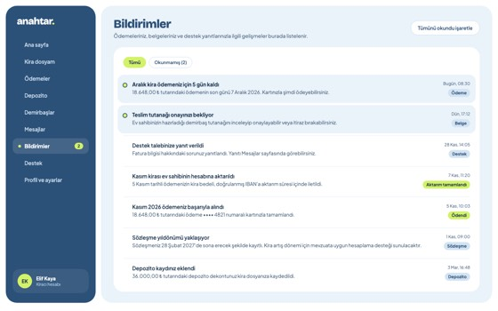
33 BildirimlerFiltreli bildirim listesi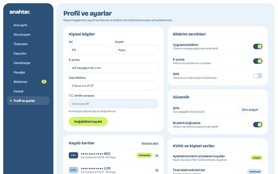
34 Profil ve ayarlarKişisel bilgiler, kartlar, tercihler, KVKK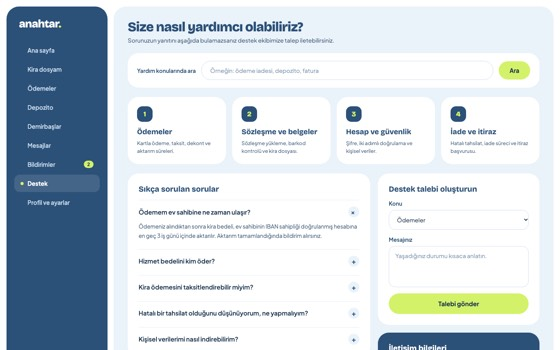
35 DestekKonu kartları, SSS, destek talebi formu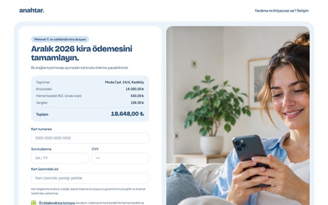
36 Herkese açık ödeme bağlantısıGiriş yapmadan kartla ödeme sayfasıMehmet Yılmaz olarak ev sahibi deneyimi
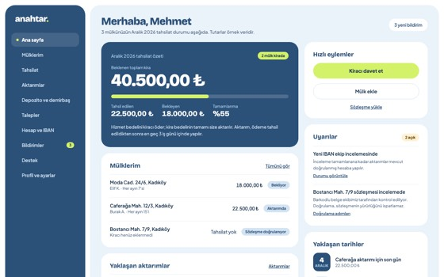
37 Ana sayfaAralık tahsilat özeti, mülk kartları, uyarılar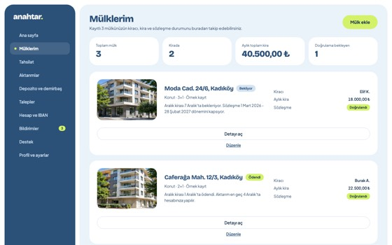
38 MülklerimMülk listesi, bina fotoğrafları, durumlar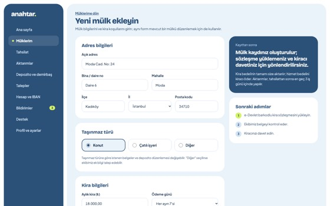
39 Mülk ekleAdres, tür, kira ve IBAN seçimi formu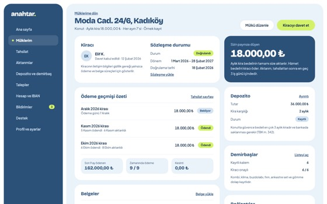
40 Mülk detayıKiracı, sözleşme, ödeme geçmişi, belgeler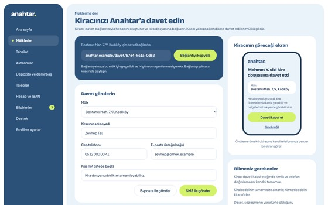
41 Kiracı davetDavet bağlantısı, gönderim, davet durumları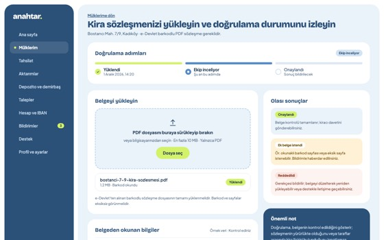
42 Sözleşme yüklemePDF yükleme ve doğrulama adımları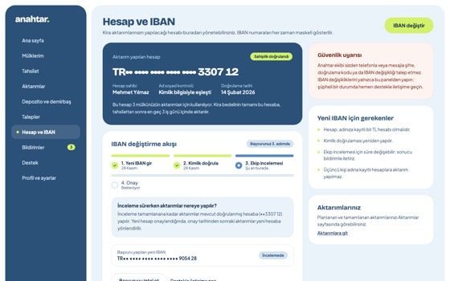
43 Hesap ve IBANIBAN doğrulama ve değiştirme akışı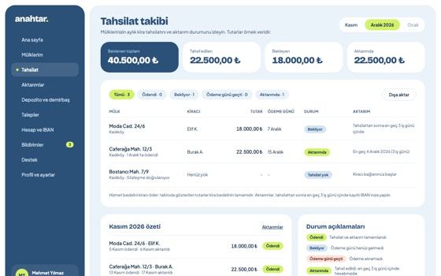
44 Tahsilat takibiAylık tahsilat tablosu ve durumları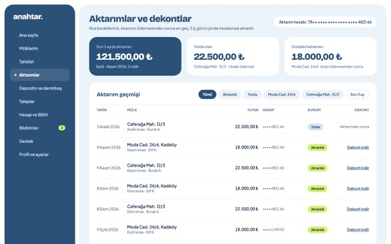
45 AktarımlarAktarım ve dekont geçmişi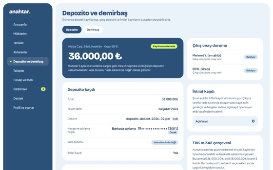
46 DepozitoDepozito kaydı ve iade akışı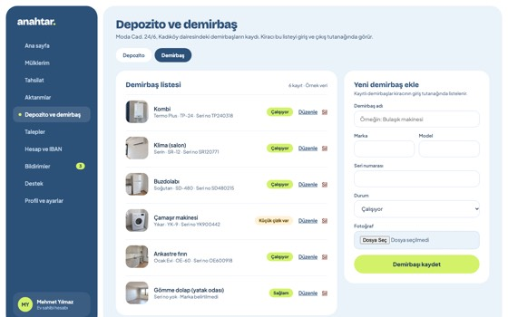
47 Demirbaş yönetimiFotoğraflı demirbaş listesi, ekleme formu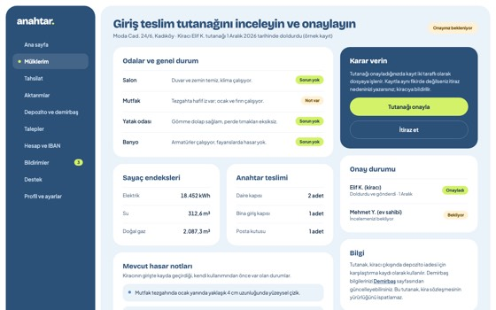
48 Tutanak onayıKiracının tutanağını inceleme ve onay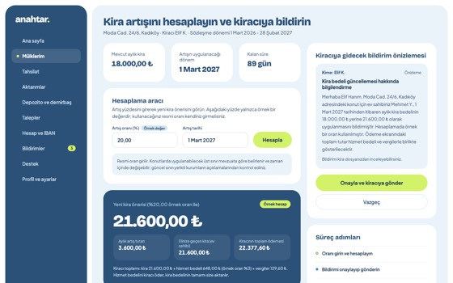
49 Kira artışıKira artışı hesaplama ve bildirim önizlemesi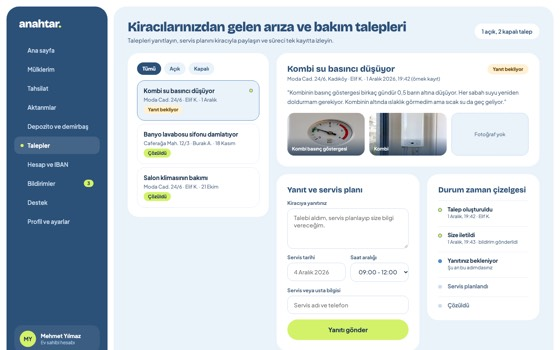
50 TaleplerKiracı talepleri ve servis planı51 BildirimlerFiltreli bildirim listesi52 Profil ve ayarlarKişisel, vergi, tercih ve KVKK ayarları53 DestekKonu kartları, SSS, destek formuİç operasyon paneli (kamuya kapalı)
Çoklu şube kiracı firma (Faz 2-3)
Ana sayfadaki telefonun içindeki ekran